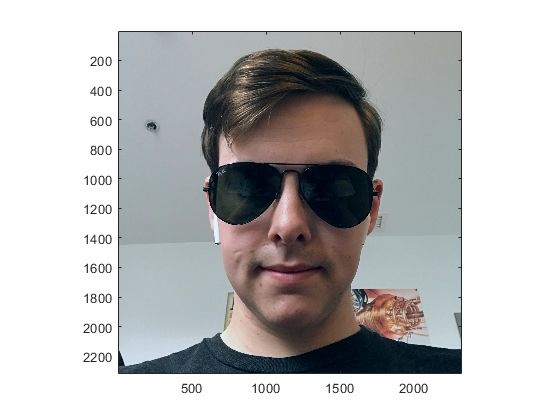
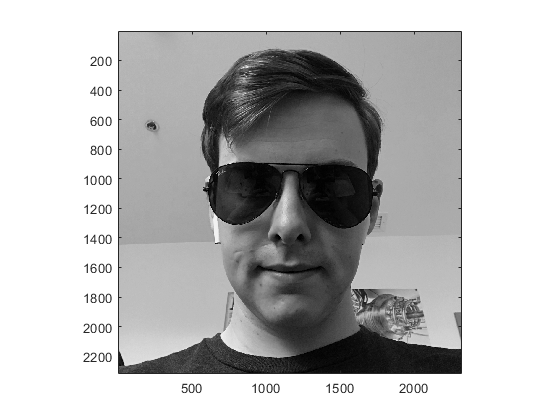
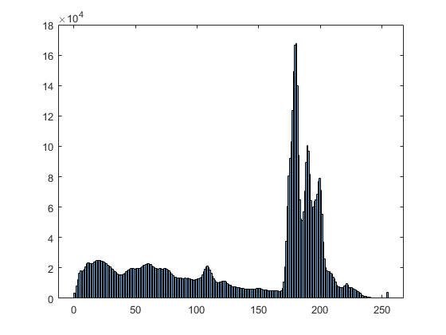
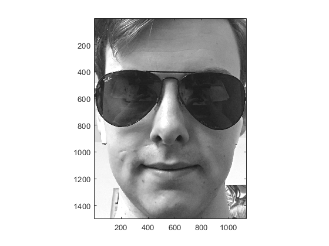

Contents
Fresh Start
Author: Evan Krimpenfort
Class: ECE 563-01
Purpose: Simple Image Processing with our Camera. An image will be loaded, grayscaled, cropped, and written back to the computer.
clc; clear all; close all;
Specification
Preface: Take a picture of something (ex. yourself) that is a color image. Write a well commented MATLAB script to perfomr the following tasks.
1. Load the image with imread().
2. Display the image with im().
3. Extract the green color channel, producing a grayscale image array. Give the Grayscale image a new variable name.
4. Display the Grayscale image with im().
5. Compute and display the correct histogram of the grayscale image using hist(), histogram(), and/or imhist().
6. Crop the image around your head and face with the MATLAB indexing operation. Give the cropped image array a new variable name.
7. Display the cropped image with im().
8. Write the cropped grayscale image with imwrite() as a .png image. You DO NOT need to keep or uplaod this image. Just verify that it open using your favorite image viewer and then delete it.
Upload the script file as a .pdf using MATLAB's publish tab.
Code
% Start of hmwk1.m % Read the image using imread(). image = imread('myself.JPEG'); % Display the image in a figure using im(). im(image); figure(1); % To extract the green color, you need to get the 2nd layer of the 3 % dimensional array by doing all, all, and 2. it is 2 because of rGb. G is % the second element. green_image = image(:,:,2); % Display your new image in another figure using im(). It will be grayscale because the array is now a 2 % dimensional array. im(green_image); figure(2); % Display a histogram by linerazing the image and then use the funciton % hist() in another figure (three at this point). figure(3); histogram(green_image(:)); % Crop the image to where only the face is shown and store it in a new % variable. cropped_green_image = green_image(500:2000, 600:1730); % Display the cropped image using im() in a fourth figure. im(cropped_green_image); figure(4); % Finally, take the cropped image and write it to a .png file imwrite(cropped_green_image, 'cropped_myself.png', 'png'); % end of hmwk1.m   